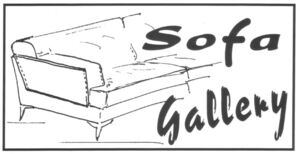

Trade Mark Journal No.2026/012 20 March 2026
WO0000001901160 (35)
Office of origin: France
Date of International Registration:20 October 2025
Date of designation in the UK:
20 October 2025

International priority date claimed: 25 April 2025
(France)
(5142359)
- Class 35
- Retail sale services, including online retail services connected with the sale of sofas, sofa beds, relaxation sofas, multifunctional sofas, armchairs, settees, pouffes [furniture], ottomans, footstools, chairs, stools, sofas, cushions, seats, decorative objects, coffee tables, end tables, furniture, tables, mirrors, carpets, lighting fixtures; online retail services connected with the sale of furniture; advertising; commercial business management; commercial administration; marketing services; promotion, advertising and marketing of websites online; organizing, conducting and promoting events for commercial and advertising purposes; advertising services through the transmission of online advertising for others via electronic communication networks; loyalty programs; management of customer loyalty, bonuses and promotions; organization, operation and supervision of customer loyalty programs; services rendered by a franchisor, namely, business assistance in the establishment, operation or management of industrial or commercial enterprises; commercial advice in the field of franchising; providing administrative assistance in the context of franchising services; providing marketing, advertising and promotional assistance in the context of franchising services; advice on commercial strategy; conducting of commercial events; professional and business networking services; commercial intermediary services in the context of matching various professionals with customers; business management and organization consultancy; advice regarding communication [public relations]; company audits [commercial analyses]; services for arranging subscriptions to newspapers and electronic journals.
HARROCH Didier
Representative: Balland-Soulie D'jordan C.B.S.A IP, Plein Soleil - A,, 80 Avenue du Gnl Callies, F-83600 Fréjus, FRANCE